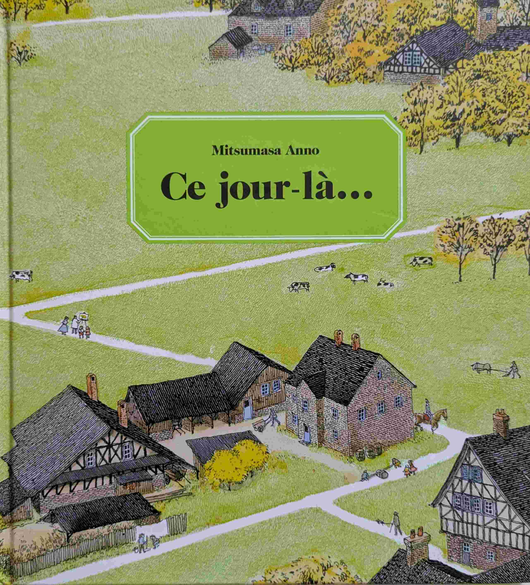
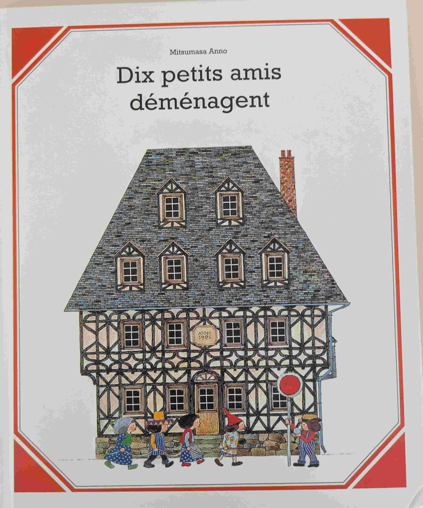
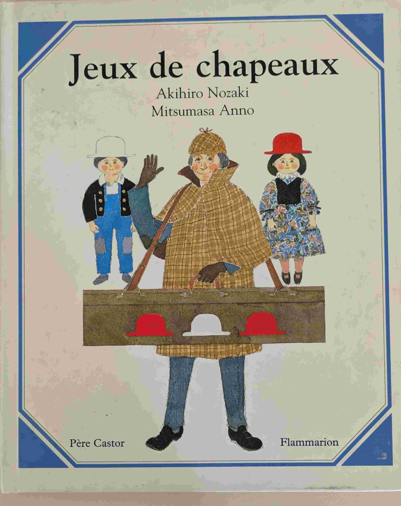
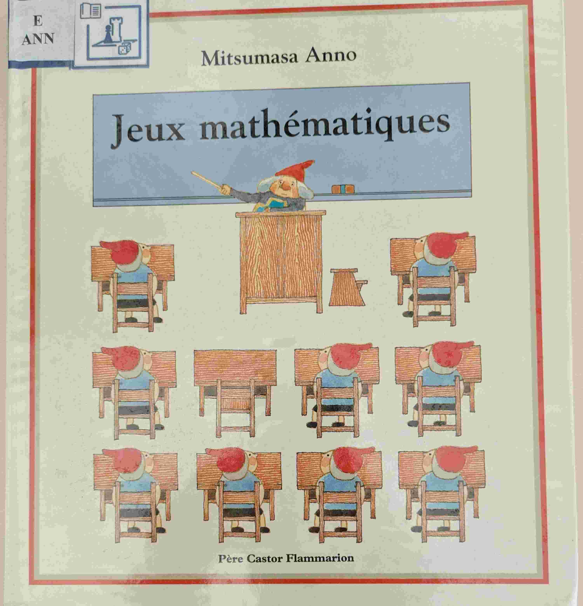
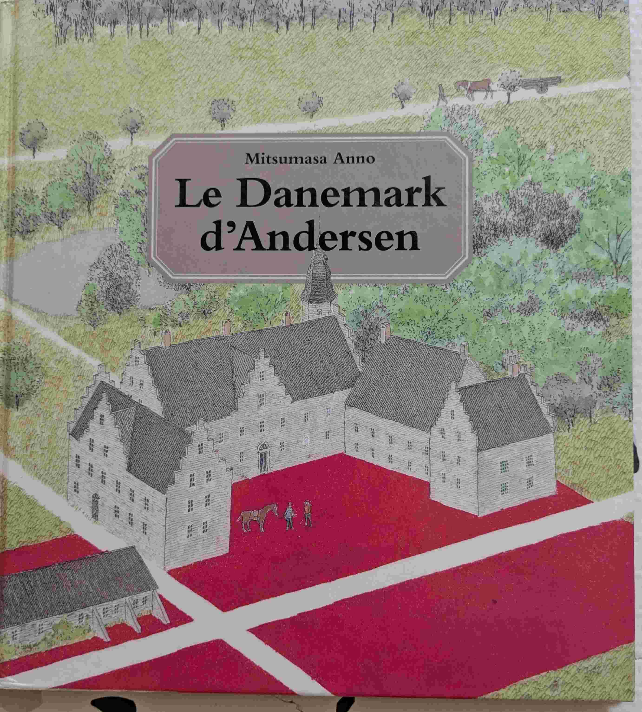
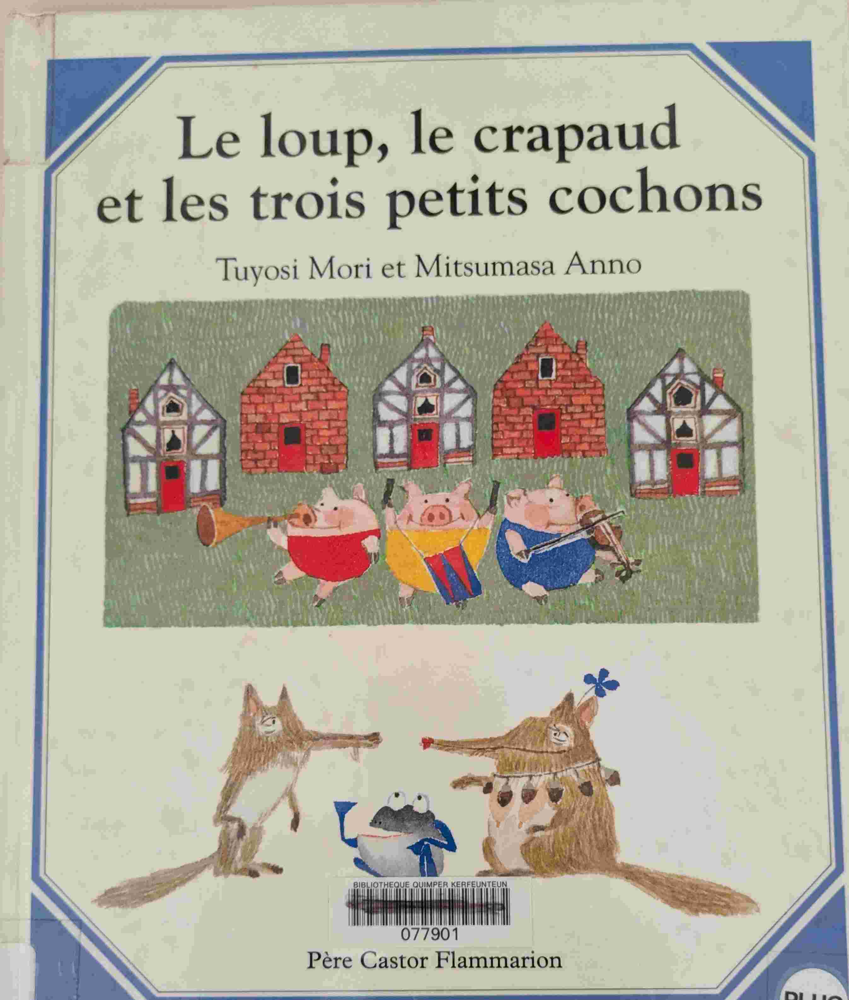
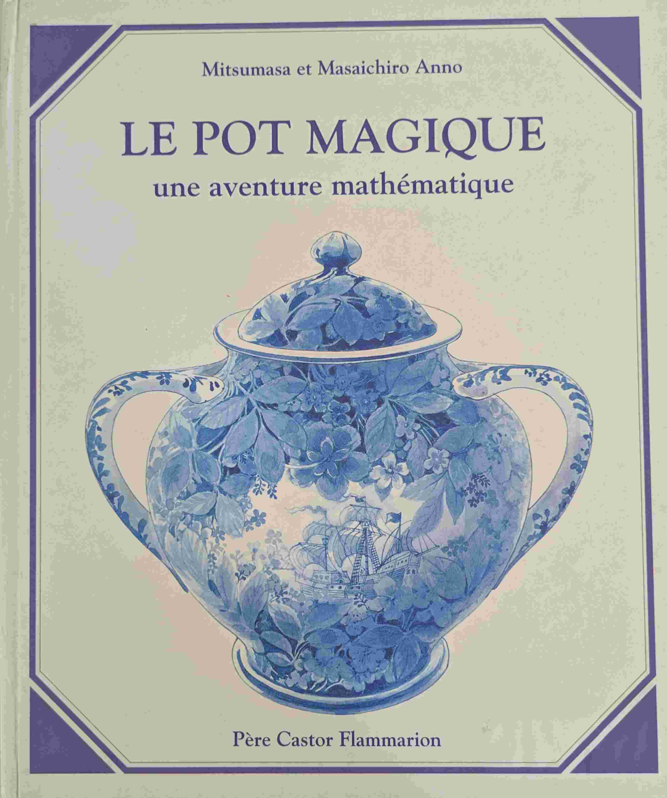
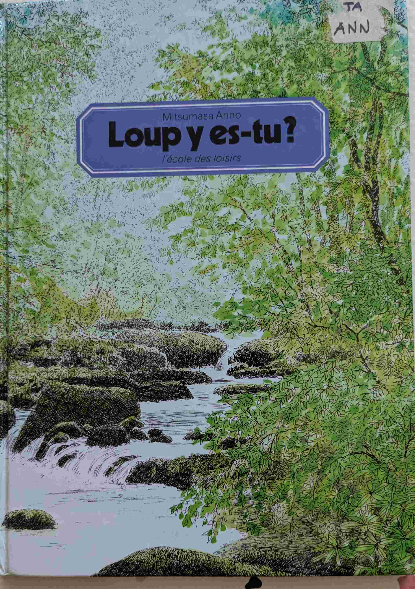
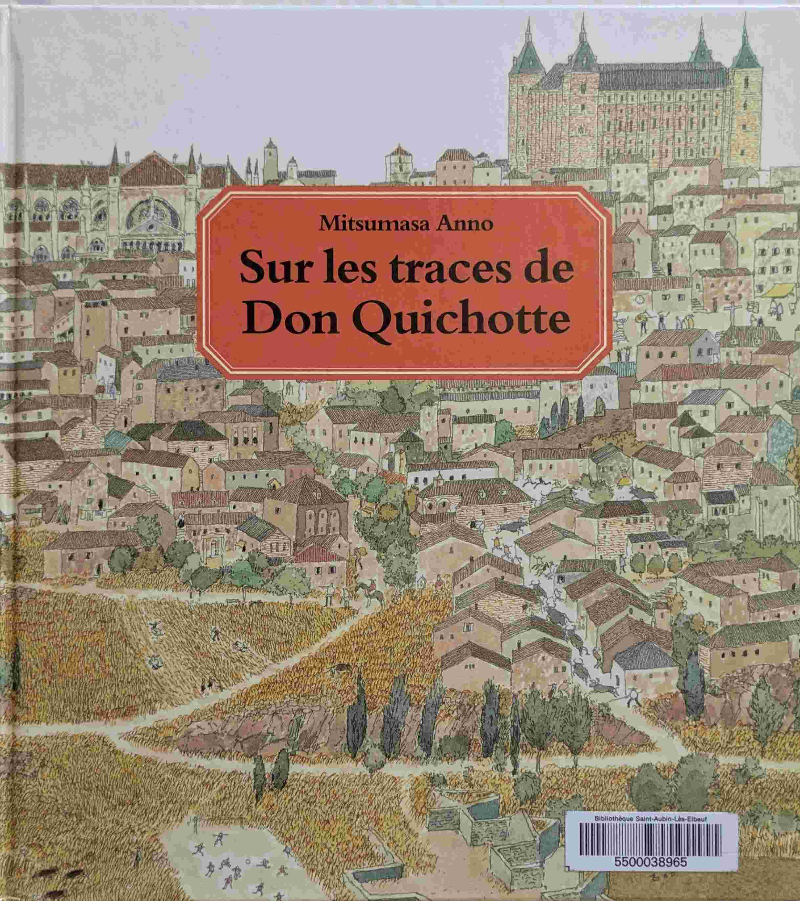
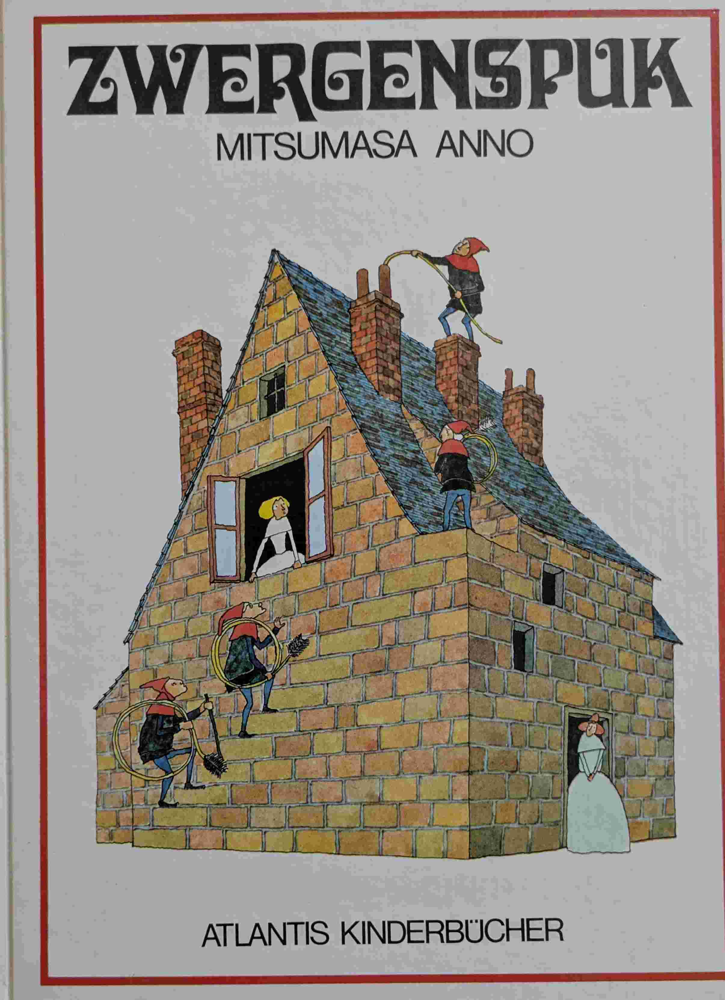

Mitsumasa Anno
Introduction
Mitsumasa Anno est un auteur et illustrateur japonais, célèbre pour ses livres pour enfants qui explorent des thèmes de la nature, du voyage, de l'art et des mathématiques.Mitsumasa Anno est également connu pour son approche unique de la narration visuelle, incitant les jeunes lecteurs à interagir avec les illustrations et à découvrir des histoires cachées.
Ce jour-là... (Mitsumasa Anno)

Un voyage initiatique à travers l'Europe des siècles passés. Beaucoup de détails. Beaucoup de références artistiques qui m'échappent, mais il y a des explications à la fin.
Dix petits amis déménagent (Mitsumasa Anno)

to be filled
Jeux de chapeaux (Mitsumasa Anno)

to be filled
Jeux mathématiques (Mitsumasa Anno)

to be filled
Le Danemark d'Anderson (Mitsumasa Anno)

to be filled
Le loup, le crapaud et les trois petits cochons (Mitsumasa Anno)

to be filled
Le pot magique (Mitsumasa Anno)

to be filled
Loup y es-tu? (Mitsumasa Anno)

to be filled
Sur les traces de Don Quichotte (Mitsumasa Anno)

Même principe que 'ce jour-là...' en zoomant sur l'Espagne.
Zwergenspuk (Mitsumasa Anno)

Un style très Escher. Avec plusieurs niveaux de compréhension. Unique dans son genre.
Prix Bologna Ragazzi 1972 (Mention spéciale pour les enfants)